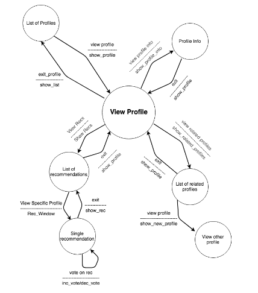
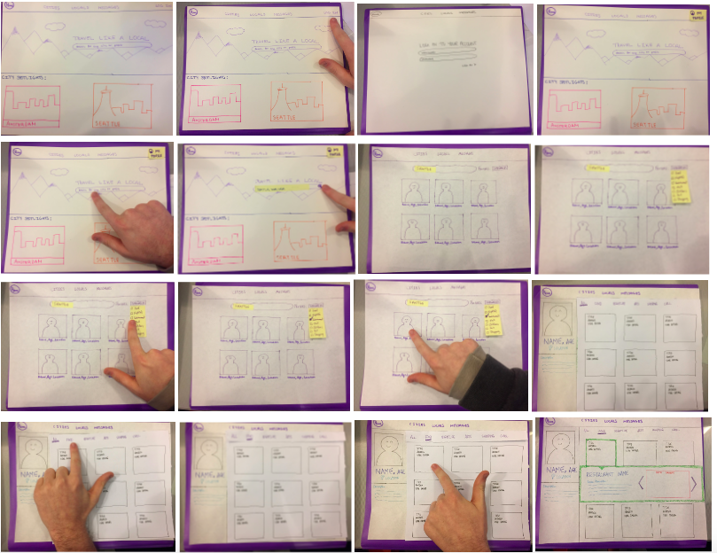
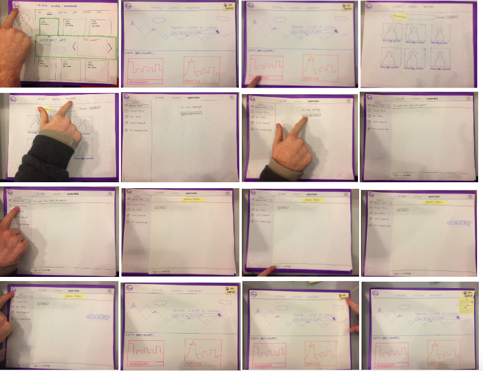
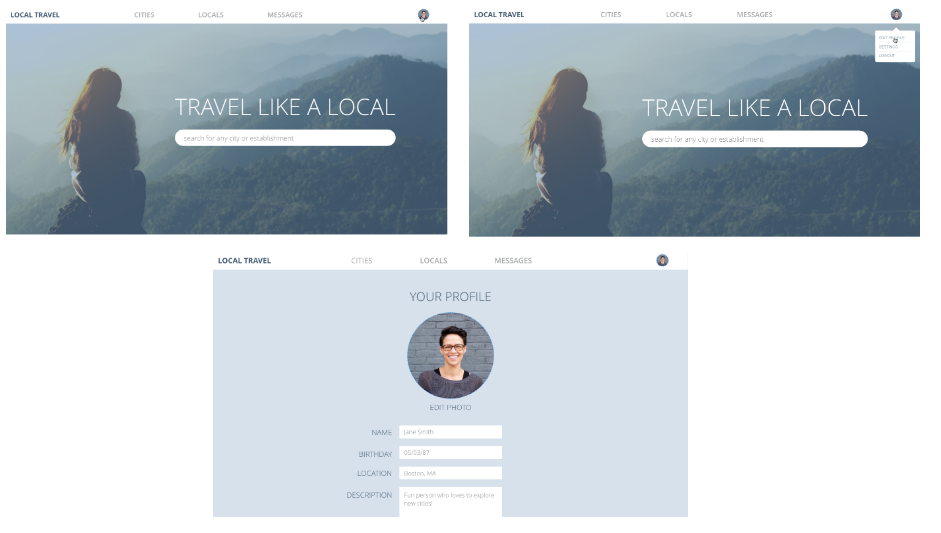

Molotro is an application I helped design with a group (members: Rachel Perry, Justin Sukernik, Bill Yung) for my Human-Computer Interaction class. This web application is a platform used for the purpose of travelers to find recommendations made by locals. Travelers search in a specific area based on their interests and preferences, and are matched with locals who make relevant recommendations, and that travelers can even connect with.
We started the design process by writing up User Characteristics, Usability Goals, Usage Scenarios, and a Conceptual Model (including objects, object attributes, object relationships, actions of objects, actions on attributes, and actions on relationships). Next, we performed a Semantic Level analysis on various actions (which included the function, parameters, description, feedback, errors, and task-command analysis). We also performed a Lexical Design, specifically for viewing a profile, and created a Syntactic Level graph, specifically for viewing a profile:
Our next step was making a paper prototype and introducing it to users for testing:
 After the paper prototype and testing, we moved on to make a medium-fidelity prototype using UXPin. Some initial designs:
And here is a demo of a more developed prototype:
After creating this prototype, we performed more extensive user testing and gained design feedback. We created a task list for participants to perform, and had them fill out a survey after testing. From the survey we gained participant metrics, pros to the application design, and areas to improve. Next, we performed a Heuristic Evaluation, as well as a Competitive Analysis comparing our site to similar existing products. We made some changes based on our user feedback, and performed another usability test with different participants.
For our final design we made some changes gathered from user feedback: allowing the ability to click on a profile to read it (not just the "Read Reviews" button), replacing the "Job" section on a local's profile to "Interests" (as that is more relevant), improving the "Edit Profile Page", including a newly designed logo, and adding more pictures and colors. We also thought about how we could make this aplication on a mobile platform and made some preliminary designs. Here is a demo of our final project:
After this final design, we created a potential roadmap of where we would see this product going: how we would continue to work on this, additional potential features that could be added in the future, and how the product would fit in to the market.